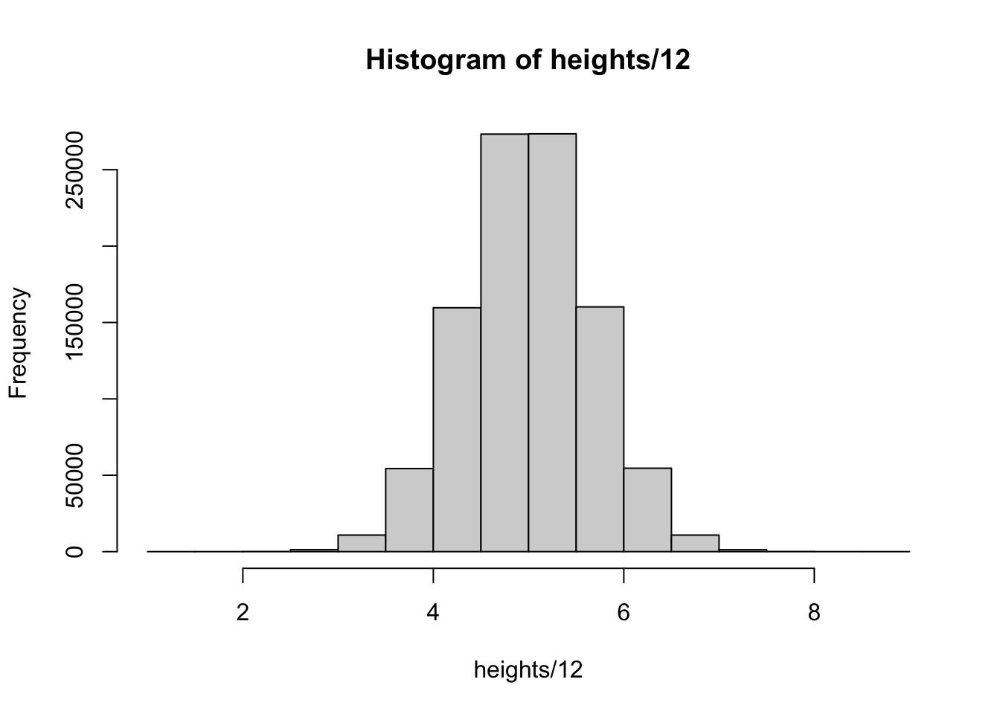

Lecture 13/14
Probability Distributions for Continous Random Variables
Section 6.1 Probability Distributions for Continuous Random Variables
Last time we talked about discrete random variables - there was a probability associated with each value.
For example, there was a set count of possible laptops sold at the store:
\[ P(x = 3) = .15 \]
We could also answer the questions of what is the probability of at least 3 laptops being sold.
For example:
\[ P(x \ge 3) = .15 + .1 + .05 = .3 \]
What if, instead, I observed a variable that was continuous.
For example: temperature, height, rainfall
A continuous variable can sometimes look discrete because of imprecision in measurement.

While we counted up the probability associated with different discrete parameters we can’t do that with continuous variables.
That curve is defined by a probability density function or pdf
In order to get probabilities, we need to look at areas under the curve:
For example, the probability that x is between 3 and 5 is equal to the area under this curve:
Just like the discrete probabilities, the area under the curve for the whole curve is 1.
The big difference is the probability of a specific number \(P(x = a) = 0\)
This implies the \(P(x \gt a) = P(x \ge a)\) and \(P(x \lt a) = P(x \le a)\)
Ex. If you are asking the probability of someone being 6 feet tall, what you really want to know is what’s the probability that they are greater than 5’11 1/2 and less than 6’0 1/2.
The next thing to deal with is what probability density function should you pick for your data? It’s not like with the discrete case where we could just list out the probabilities of specific number
Continuous Uniform Probability Distribution
\[ f(x) = \frac{1}{b - a} \text{ for } a \le x \le b \]
x can only run from a to b
a and *b are parameters
Notice that the distribution is constant - does not change no matter what value of x we plug in
(Draw Figure 6.3) - Uniform Probability distribution
\[ \mu = \frac{b-a}{2} \]
\[ \sigma^2 = \frac{(b - a)^2}{12} \]
Example 6.1
The error introduced by rounding an observation to the nearest inch has a uniform distribution over the interval from -.5 to .5. What is the probability that the rounding error is less than .2 in absolute value (i.e., \(-.2 \lt x \lt .2\))
The Exponential Probability Distribution
\[ f(x) = \lambda e^{-\lambda x} \text{ for } x \ge 0 \text{ and } \lambda > 0 \]
\(\mu = 1/\lambda\)
\(\sigma^2 = 1/\lambda^2\)
\[ P(x > a) = e^{-\lambda a} \]
Example 6.2
The waiting time at a supermarket checkout counter has an exponential distribution with an average waiting time of 5 minutes. What is the probability that you will have to wait more than 10 minutes at the checkout counter?
Here we are given \(\mu\) - what is \(\lambda\)?
Homework
[1] "6.1.18, 6.1.19"Answers: Section 6.1
Section 6.2 The Normal Probability Distribution
The normal probability distribution is a very common distribution because a lot of measurements follow this distribution at least approximately.
The pdf is defined by:
\[ f(x) = \frac{1}{\sigma \sqrt{2 \pi}} e^{-(x - \mu)^2/(2 \sigma^2)} \]
What are the parameters of the distribution?
Some example of normal distributions
Interactive: